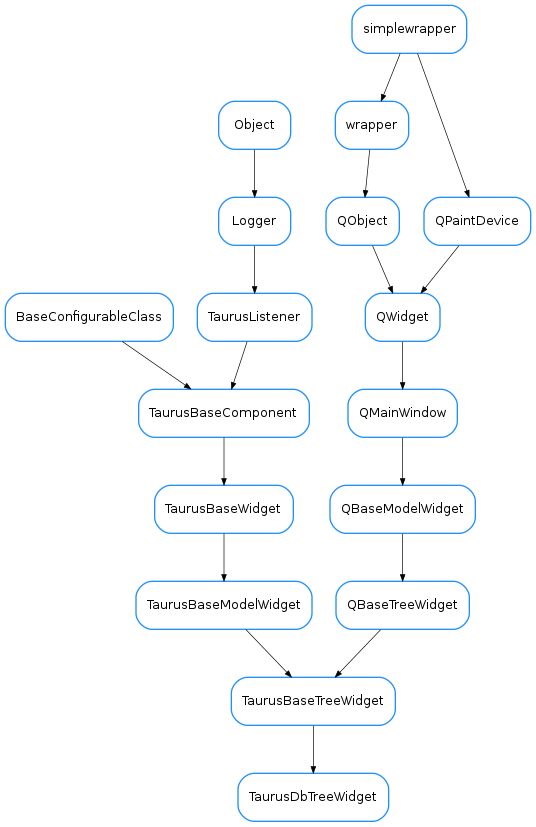

TaurusDbTreeWidget¶

-
class
TaurusDbTreeWidget(parent=None, designMode=False, with_navigation_bar=True, with_filter_widget=True, perspective=None, proxy=None)[source]¶ Bases:
taurus.qt.qtgui.tree.taurustree.TaurusBaseTreeWidgetA class:taurus.qt.qtgui.tree.TaurusBaseTreeWidget that connects to a
taurus.core.taurusauthority.TaurusAuthoritymodel. It can show the list of database elements in four different perspectives:- device : a three level hierarchy of devices (domain/family/name)
- server : a server based perspective
- class : a class based perspective
Filters can be inserted into this widget to restrict the tree nodes that are seen.
-
DftPerspective= 3¶
-
KnownPerspectives= {8: {'model': [<class 'taurus.qt.qtcore.model.taurusdatabasemodel.TaurusDbServerProxyModel'>, <class 'taurus.qt.qtcore.model.taurusdatabasemodel.TaurusDbServerModel'>], 'icon': 'application-x-executable', 'tooltip': 'View by server tree', 'label': 'By server'}, 'PlainDevice': {'model': [<class 'taurus.qt.qtcore.model.taurusdatabasemodel.TaurusDbDeviceProxyModel'>, <class 'taurus.qt.qtcore.model.taurusdatabasemodel.TaurusDbPlainDeviceModel'>], 'icon': 'applications-system', 'tooltip': 'View by plain device tree (it may take a long time if there are problems with the exported devices)', 'label': 'By plain device'}, 2: {'model': [<class 'taurus.qt.qtcore.model.taurusdatabasemodel.TaurusDbDeviceClassProxyModel'>, <class 'taurus.qt.qtcore.model.taurusdatabasemodel.TaurusDbDeviceClassModel'>], 'icon': 'text-x-script', 'tooltip': 'View by class tree', 'label': 'By class'}, 3: {'model': [<class 'taurus.qt.qtcore.model.taurusdatabasemodel.TaurusDbDeviceProxyModel'>, <class 'taurus.qt.qtcore.model.taurusdatabasemodel.TaurusDbDeviceModel'>], 'icon': 'applications-system', 'tooltip': 'View by device tree', 'label': 'By device'}}¶